Travail académique structurant réalisé dans un cadre universitaire identifié.
Travaux & productions
Travaux, productions et recherches.
Les travaux, mémoires, rapports et productions académiques présentés ici rendent compte d’un parcours interdisciplinaire construit entre droit, géographie littorale, environnement, gouvernance maritime, médiation, innovation et prospective. Ils ne constituent pas tous des publications au sens académique strict, mais des productions de recherche, d’analyse, de formation ou d’application qui structurent progressivement les axes OBY.
Statuts utilisés
Les statuts ci-dessous précisent la nature des productions sans laisser entendre qu'un document est publié lorsqu'il ne l'est pas.
Production universitaire ou de formation, présentée selon son statut réel.
Production de terrain, diagnostic ou exercice appliqué, sans assimilation à une mission professionnelle.
Exposé, simulation ou exercice de formation mobilisant analyse, synthèse ou négociation.
Travail au long cours ou axe structurant, présenté sans statut universitaire actuel.
Document complet non mis en ligne, transmissible seulement selon le contexte et le niveau de validation.
Les documents complets ne sont pas publiés en ligne. Certains travaux peuvent être présentés, résumés ou transmis sur demande, selon leur niveau de finalisation, leur caractère publiable et le contexte de la sollicitation.
Mémoires et travaux structurants
Travaux identifiés par diplôme, formation ou cadre universitaire, avec statut prudent.
Rapports appliqués
Diagnostics, rapports de terrain et productions pédagogiques liées aux littoraux et aux vulnérabilités.
Exposés et simulations
Productions courtes montrant analyse, argumentation, négociation, synthèse et présentation.
Travaux au long cours
Axes de recherche approfondie situés sans vocabulaire statutaire sensible.
Repères documentaires publics
Les pages de garde présentées sur cette page sont publiées dans la version validée par Joseph. Les documents complets, annexes, pièces internes et données sensibles ne sont pas publiés.
Mémoires et travaux académiques structurants
Cette sélection rassemble les travaux académiques qui structurent les axes OBY. Les pages de garde publiées accompagnent des fiches courtes ; les documents complets, annexes et pièces internes ne sont pas mis en ligne.
Aires marines protégées et réchauffement climatique en Méditerranée : outils, gouvernance et adaptation
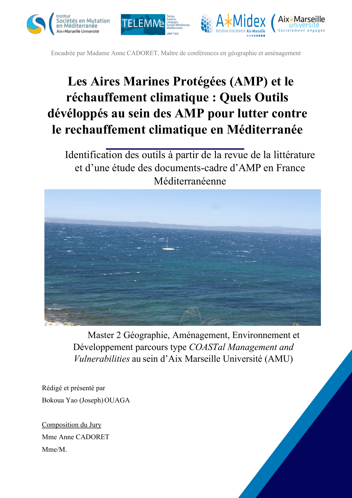
Titre exact : AMP et réchauffement climatique en Méditerranée : outils développés au sein des AMP
Cadre : Master 2 COAST — Coastal Management and Vulnerabilities — Aix-Marseille Université. Stage de recherche lié au projet PROTEUS / AMIDEX.
Année : 2024
Statut : Travail académique / recherche appliquée
Ce travail porte sur les liens entre les aires marines protégées et le réchauffement climatique en Méditerranée. Il s’intéresse aux outils et dispositifs développés au sein des AMP pour répondre aux enjeux climatiques, à partir d’une revue de littérature et de l’analyse de documents cadres liés aux AMP de la France méditerranéenne. La réflexion articule protection de la biodiversité, adaptation au changement climatique, gouvernance des espaces marins et place des sciences humaines et sociales dans la compréhension des mutations environnementales.
Mots-clés : Aires marines protégées · réchauffement climatique · Méditerranée · conservation · adaptation · biodiversité · gouvernance côtière · environnement marin · PROTEUS · prospective
Axes OBY : AMP · climat · Méditerranée · environnement marin · littoral · adaptation · gouvernance · recherche appliquée · prospective · économie bleue
L'effectivité des principes d'indépendance et d'impartialité du médiateur dans les centres de médiation de l'espace OHADA
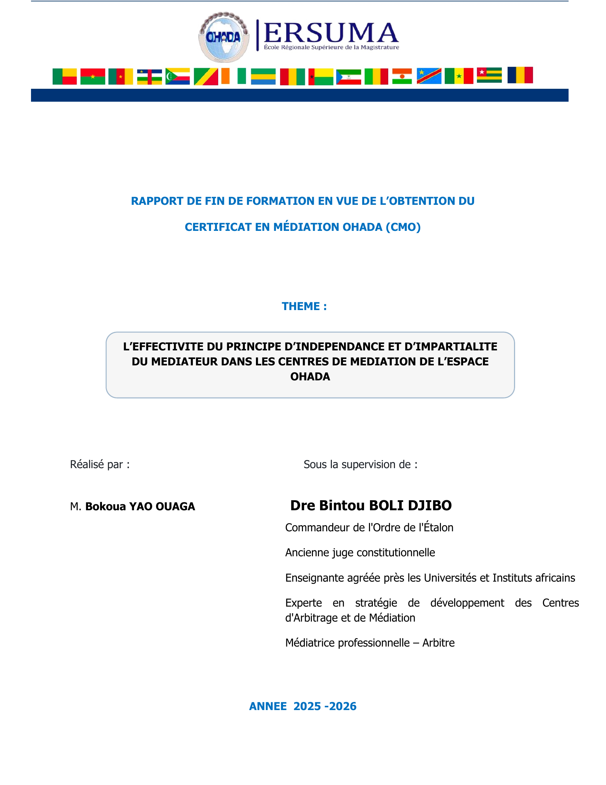
Cadre : CMO OHADA / ERSUMA
Année : 2025–2026
Statut : Travail académique en médiation OHADA
Ce travail analyse l’effectivité des principes d’indépendance et d’impartialité du médiateur dans les centres de médiation de l’espace OHADA. Il montre que l’Acte uniforme relatif à la médiation consacre un socle juridique important — désignation du médiateur, déclaration écrite, obligation de révélation, disponibilité, diligence et traitement équitable des parties — mais que l’effectivité pratique dépend aussi des règlements des centres, des pratiques institutionnelles, de la gestion des conflits d’intérêts et du contrôle déontologique. L’étude met en évidence des marges d’amélioration relatives à l’harmonisation des outils, à la formation continue, aux déclarations-types et aux procédures de révélation ou de contestation.
Mots-clés : Médiation OHADA · Médiateur · Indépendance · Impartialité · Effectivité · Centres de médiation · Déontologie · Conflits d’intérêts · Obligation de révélation · Règlement amiable des différends
Axe lié : Médiation, impartialité et institutions
Médiation et commerce international : prévenir et résoudre les différends par un mode amiable innovant
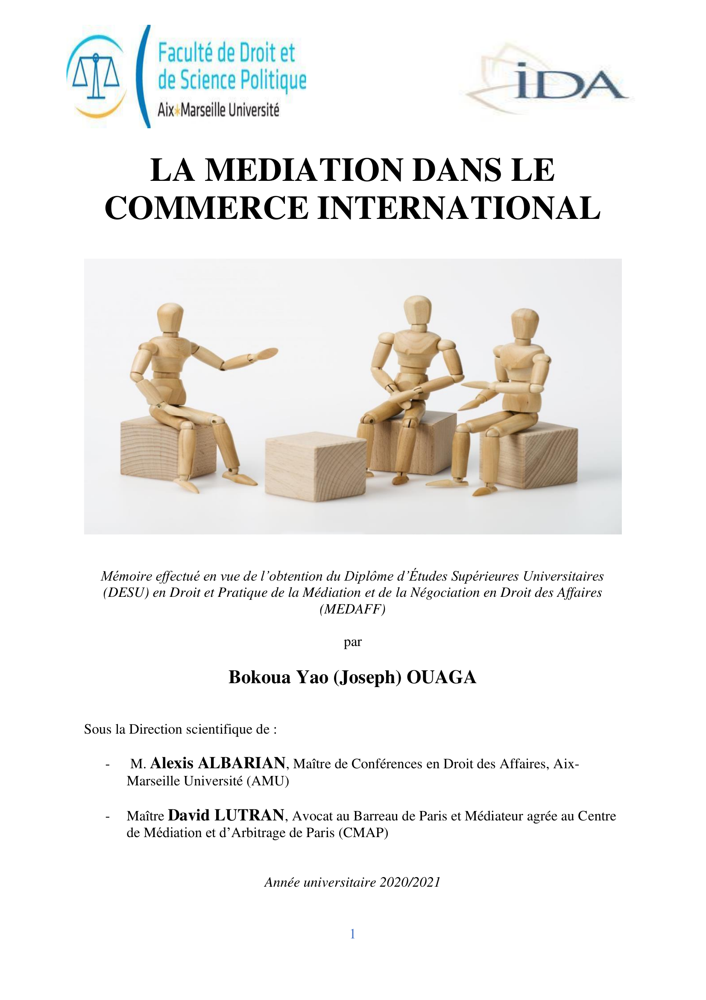
Titre exact : La médiation dans le commerce international
Cadre : DESU en Droit et Pratique de la Médiation et de la Négociation en Droit des Affaires — MEDAFF / Aix-Marseille Université.
Année : 2020–2021 / 2021
Statut : Mémoire DESU
Ce mémoire analyse la médiation dans le commerce international comme un mode amiable et innovant de prévention et de règlement des différends. Il relie les enjeux de négociation, de sécurité contractuelle, de résolution amiable et d’efficacité des modes alternatifs dans les relations d’affaires internationales. Il constitue un jalon important du parcours OBY sur la médiation, le règlement amiable et la gouvernance des différends.
Mots-clés : Convention de Singapour · Médiation · Commerce international · CNUDCI · MARD · Contrat · règlement amiable · négociation · droit des affaires · prévention des conflits
Innovation et sécurisation des espaces maritimes : opportunités, risques et régulation
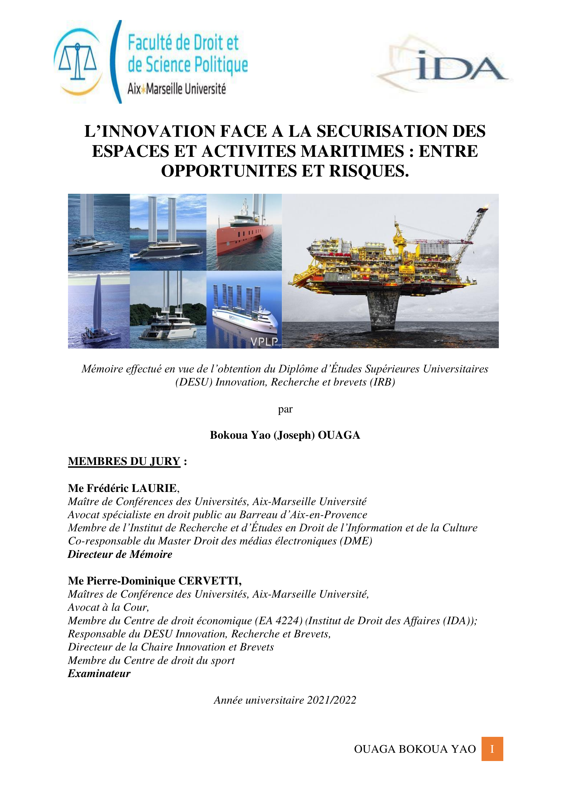
Titre exact : L’innovation face à la sécurisation des espaces et activités maritimes : entre opportunités et risques
Cadre : DESU Innovation, Recherche et Brevets — Institut de Droit des Affaires / Aix-Marseille Université.
Année : 2021–2022 / 2022
Statut : Mémoire DESU
Ce mémoire examine les liens entre innovation et sécurisation des espaces et activités maritimes. Il met en perspective les opportunités ouvertes par les technologies, la recherche appliquée, la propriété intellectuelle et les dispositifs innovants, tout en identifiant les risques juridiques, stratégiques et opérationnels liés à leur déploiement dans le domaine maritime. Il permet de relier innovation, régulation, sécurité maritime et gouvernance des espaces marins dans une approche interdisciplinaire.
Mots-clés : Innovation · sécurité maritime · droit de la mer · activités maritimes · propriété intellectuelle · brevets · technologies · régulation · risques · opportunités · recherche appliquée · économie bleue
Rapport de stage au cabinet d’avocat CASA Juris : pratique juridique et rédaction professionnelle
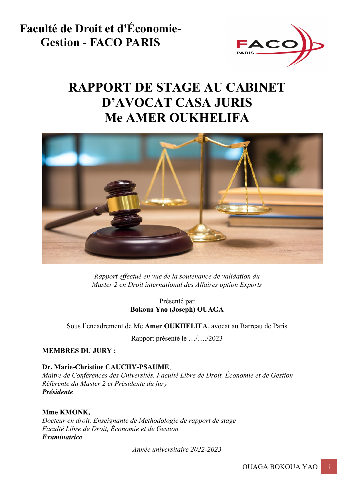
Titre exact : Rapport de stage au cabinet d’avocat CASA Juris
Cadre : Master 2 Droit international des affaires, option Exports — FACO Paris.
Année : 2022–2023
Statut : Rapport de stage professionnel-académique
Ce rapport rend compte d’une expérience professionnelle-académique en cabinet d’avocat. La fiche publique valorise uniquement les compétences acquises : recherche et analyse juridiques, rédaction professionnelle, veille, formalités, organisation documentaire et compréhension de la pratique quotidienne d’un cabinet, dans le respect strict de la confidentialité.
Mots-clés : Cabinet d’avocat · CASA Juris · pratique juridique · rédaction juridique · analyse juridique · veille juridique · formalités · droit des affaires · professionnalisation
Axes OBY : pratique juridique · droit des affaires · rédaction professionnelle · analyse juridique · professionnalisation · rigueur documentaire · expérience de cabinet
Préservation de la zone côtière en droit ivoirien : une première matrice du parcours littoral
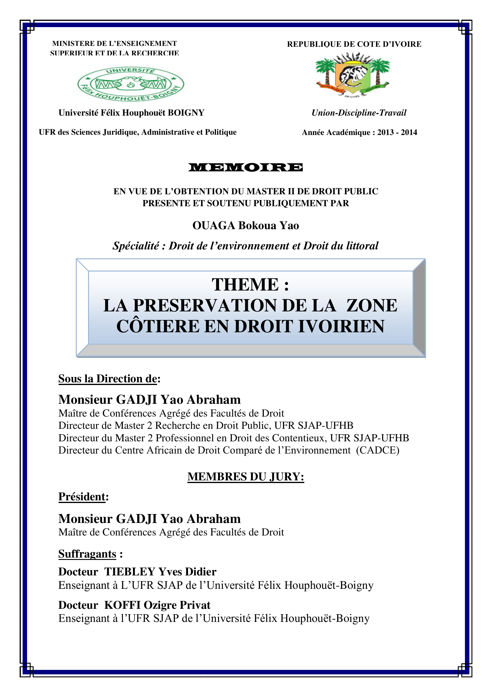
Titre exact : La Préservation de la zone côtière en droit ivoirien
Cadre : Mémoire de Master 2 Recherche en droit public, option droit de l’environnement — Université Félix Houphouët-Boigny, Cocody.
Année : 2015
Date de soutenance : 10 mars 2015
Statut : Mémoire de Master 2 Recherche / pièce fondatrice du parcours OBY
Ce mémoire constitue une pièce fondatrice du parcours OBY. Il porte sur la préservation de la zone côtière en droit ivoirien, à l’articulation du droit de l’environnement, de l’aménagement du littoral et de la gouvernance des espaces côtiers. Il éclaire l’ancrage initial du parcours de Joseph dans les problématiques littorales, environnementales et institutionnelles en Côte d’Ivoire, avant son élargissement vers le droit de la mer, la gouvernance maritime, la Méditerranée et le Golfe de Guinée.
Mots-clés : Zone côtière · droit ivoirien · littoral · droit de l’environnement · Côte d’Ivoire · gouvernance côtière · Afrique de l’Ouest · aménagement du littoral · protection de l’environnement
Axes OBY : Littoral · droit de l’environnement · Côte d’Ivoire · Afrique de l’Ouest · gouvernance côtière · droit de la mer · environnement marin · parcours fondateur
Le navire dans le commerce maritime ivoirien
Cadre : Logistique internationale — Groupe EDHEC-Abidjan
Axes : transport maritime, logistique internationale, commerce maritime, Côte d’Ivoire
Statut : mémoire / projet de mémoire à clarifier
Élément conservé en réserve éditoriale tant que le statut exact n'est pas stabilisé.
Terrains, visites & observations appliquées
Ces repères présentent des terrains, visites, ateliers et observations appliquées réalisés dans le cadre du parcours OBY, principalement autour du Master 2 COAST, de la gestion intégrée des zones côtières, des usages littoraux, des aires marines protégées, de la planification spatiale maritime et de la recherche appliquée. Ils sont présentés sous forme de repères sobres ; aucun rapport complet, aucune carte, aucune photo ou donnée de terrain n’est publié.
Saint-Aygulf
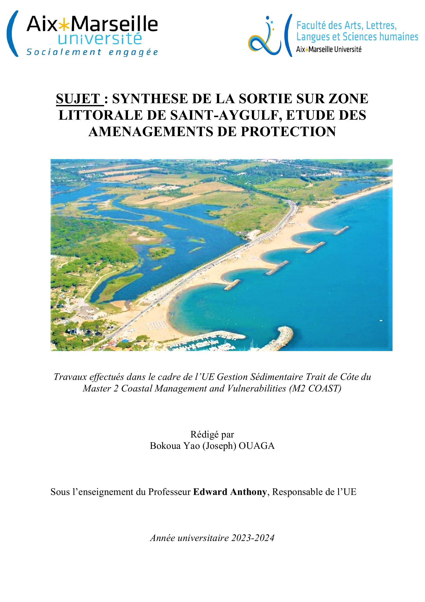
Cadre : Master 2 COAST — gestion sédimentaire, trait de côte et aménagements de protection.
Travail de terrain centré sur les aménagements de protection, la gestion sédimentaire et les enjeux liés à l’évolution du trait de côte.
Mots-clés : Saint-Aygulf · trait de côte · gestion sédimentaire · aménagements de protection · vulnérabilité côtière · risques littoraux
Rade sud de Marseille — nautisme et plaisance
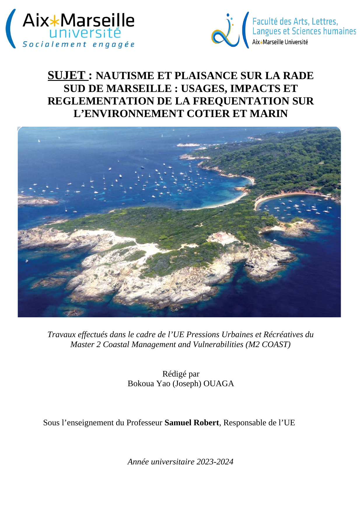
Titre exact : Nautisme et plaisance sur la rade sud de Marseille : usages, impacts et réglementation de la fréquentation sur l’environnement côtier et marin
Cadre : Master 2 COAST — UE Pressions urbaines et récréatives.
Année : 2023–2024
Statut : Travail académique appliqué / synthèse de sortie
Travail appliqué sur le nautisme, la plaisance, les usages récréatifs, leurs impacts et leur réglementation dans l’environnement côtier et marin.
Mots-clés : Rade sud de Marseille · nautisme · plaisance · usages récréatifs · fréquentation · réglementation · environnement côtier · environnement marin · gouvernance littorale
Submersion marine en Méditerranée : risques côtiers, vulnérabilités littorales et adaptation
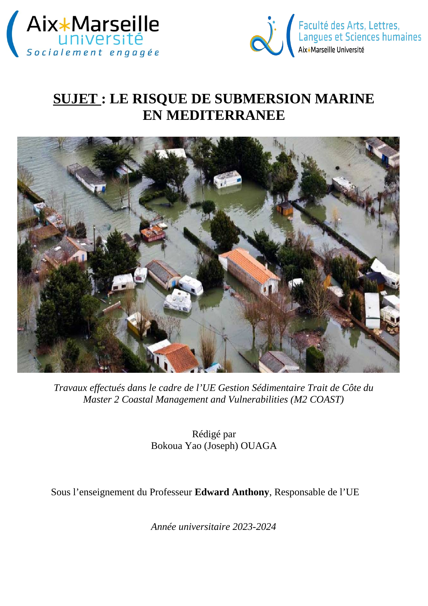
Titre exact : LE RISQUE DE SUBMERSION MARINE EN MEDITERRANEE
Cadre : Master 2 COAST — Aix-Marseille Université.
Année : 2023–2024.
Statut : Travail académique appliqué / rapport de synthèse.
Ce travail porte sur la submersion marine en Méditerranée, les risques côtiers, les vulnérabilités littorales et les enjeux d’adaptation des espaces côtiers. Il s’inscrit dans le parcours M2 COAST et contribue à la compréhension des dynamiques de risque, de gestion du trait de côte et de gouvernance littorale.
Mots-clés : Submersion marine · Méditerranée · risques côtiers · vulnérabilités littorales · trait de côte · adaptation · littoral · Master 2 COAST
La Londe-les-Maures : projet de territoire à l’horizon 2070
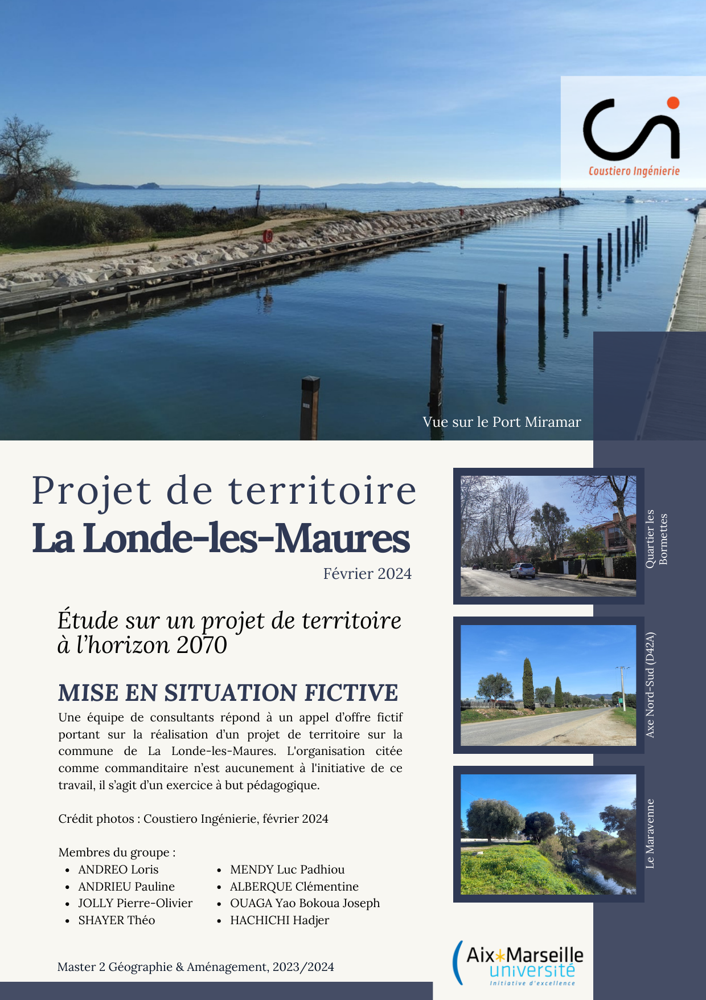
Titre exact : Étude sur un projet de territoire à l’horizon 2070
Cadre : Master 2 Géographie & Aménagement — mise en situation fictive sur la commune de La Londe-les-Maures.
Année : 2023–2024 / février 2024
Statut : Travail pédagogique collectif / projet de territoire fictif
Ce travail pédagogique porte sur un projet de territoire à l’horizon 2070 pour La Londe-les-Maures. Il articule diagnostic territorial, risques littoraux, changement climatique, pressions foncières et démographiques, besoins en équipements, adaptation et stratégies d’aménagement.
Mots-clés : La Londe-les-Maures · projet de territoire · horizon 2070 · risques littoraux · changement climatique · recul stratégique · équipements · adaptation · aménagement littoral · prospective territoriale
Coustiero Ingénierie : gestion de l’érosion côtière et durabilité des aménagements littoraux
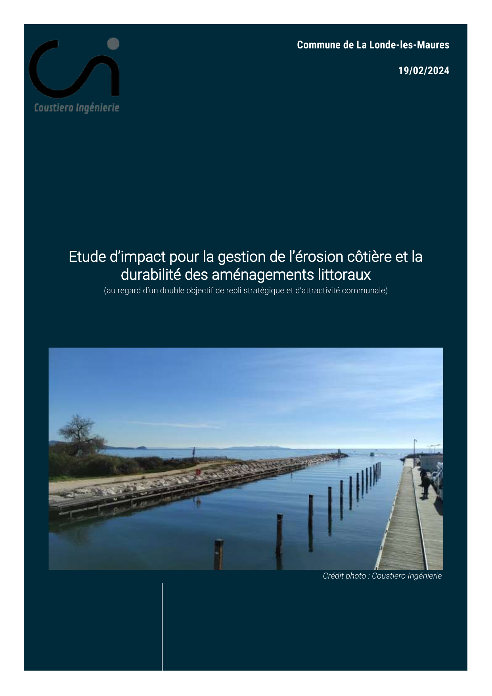
Titre exact : Étude d’impact pour la gestion de l’érosion côtière et la durabilité des aménagements littoraux
Cadre : Master 2 Géographie & Aménagement — mémoire technique pédagogique lié à La Londe-les-Maures.
Année : 2023–2024 / 19 février 2024
Statut : Mémoire technique pédagogique / mise en situation fictive
Ce mémoire technique présente une approche pédagogique de la gestion de l’érosion côtière et de la durabilité des aménagements littoraux, au regard d’enjeux de repli stratégique, d’attractivité communale, de diagnostic territorial, de méthodologie d’étude et de gouvernance des transformations littorales.
Mots-clés : La Londe-les-Maures · Coustiero Ingénierie · érosion côtière · durabilité · aménagements littoraux · repli stratégique · attractivité communale · diagnostic territorial · ingénierie territoriale · littoral
Calanques / Madrague / Goudes
Cadre : Master 2 COAST — gestion intégrée de la zone côtière.
Sortie de terrain sur le littoral marseillais, entre espaces protégés, usages, protection environnementale, pression urbaine et gouvernance territoriale.
Mots-clés : Calanques · Goudes · Madrague de Montredon · GIZC · littoral marseillais · usages · protection · gouvernance littorale
DIRM Méditerranée / planification spatiale maritime
Cadre : Master 2 COAST — visite institutionnelle / sortie-conférence.
Repère institutionnel autour de la planification spatiale maritime, de l’action publique et de la gouvernance des espaces marins.
Mots-clés : DIRM Méditerranée · planification spatiale maritime · GIZC · gouvernance maritime · institutions · action publique
Fresque de la planification spatiale maritime
Cadre : Master 2 COAST — activité pédagogique.
Activité pédagogique consacrée aux interactions entre usages, acteurs, gouvernance et décisions dans l’espace maritime.
Mots-clés : Planification spatiale maritime · pédagogie · usages maritimes · acteurs · gouvernance · arbitrage
MedPAN / Port-Cros / AMP
Cadre : Participation / veille appliquée autour des aires marines protégées.
Participation à un atelier régional lié aux aires marines protégées, au tourisme, aux usages, à la gouvernance et à la conservation en Méditerranée.
Mots-clés : MedPAN · Port-Cros · aires marines protégées · tourisme · AMP · Méditerranée · usages · gouvernance · conservation
PROTEUS — Recherche appliquée, prospective méditerranéenne et gouvernance des usages littoraux
Cadre : Projet PROTEUS — Aix-Marseille Université / recherche appliquée / prospective interdisciplinaire.
Année : 2024
Statut : Trace officielle / entretien / contribution à un environnement de recherche appliquée.
Cette trace présente l’inscription de Joseph dans l’environnement PROTEUS, autour des enjeux de prospective interdisciplinaire, d’usages territoriaux et d’anticipation des risques en Méditerranée. Elle met en valeur l’articulation entre aires marines protégées, changement climatique, conflits d’usage, sciences humaines et sociales, gouvernance littorale et diffusion d’une culture de la prospective.
Mots-clés : PROTEUS · prospective · Méditerranée · aires marines protégées · climat · littoral · conflits d’usage · recherche appliquée · sciences humaines et sociales · gouvernance territoriale
Exposés, simulations et productions pédagogiques
Cette sélection courte donne à voir des compétences d’analyse, d’argumentation, de négociation, de synthèse et de présentation, sans transformer les exercices en productions longues.
Exposé oral de groupe sur la prospective
Cadre : M2 COAST
Production pédagogique centrée sur les futurs possibles, les scénarios et la lecture des transformations territoriales.
Cryptomonnaies, innovation technologique et impacts économiques
Cadre : M2 Droit international des affaires
Exposé consacré aux liens entre technologies émergentes, économie, régulation et transformations des échanges.
Contrat de vente internationale de matières premières
Cadre : M2 Droit international des affaires
Présentation orale mobilisant droit des contrats, commerce international et structuration d'une opération transfrontière.
Simulation de négociation internationale
Cadre : M2 Droit international des affaires
Exercice pédagogique autour des positions, intérêts, compromis et méthodes de négociation.
Simulation de négociation d’un contrat de vente internationale
Cadre : M2 Droit international des affaires
Simulation appliquée à la discussion contractuelle, aux clauses, aux risques et à la coordination des parties.
Travaux liés à l’innovation, blockchain et propriété intellectuelle
Repères pédagogiques mobilisés avec prudence comme objets d’analyse, sans publication de support complet.
Travaux de long cours et axes structurants
Ces axes relèvent de travaux académiques au long cours, de recherches approfondies ou de projets de recherche avancés. Ils ne sont pas présentés comme un statut universitaire actuel.
Droit international de la mer et sécurisation maritime
Recherche approfondie sur le droit international de la mer, la sécurisation des espaces et activités maritimes, la souveraineté maritime et la gouvernance du Golfe de Guinée.
Gouvernance maritime et action de l’État en mer
Axe structurant autour de l'effectivité institutionnelle, de l'action de l'État en mer, de la coordination administrative et des espaces maritimes africains.
Littoral et vulnérabilités
Travaux académiques au long cours reliant géographie littorale, environnement, aménagement, vulnérabilités côtières et prospective territoriale.
Médiation et impartialité
Axe structurant consacré aux modes amiables de règlement des différends, à l'indépendance du tiers et aux cadres institutionnels de médiation.
Innovation et régulation
Projet de recherche avancé sur les relations entre innovation, propriété intellectuelle, technologies émergentes, responsabilité et régulation des usages.
Documents et accessibilité
Les documents complets ne sont pas publiés en ligne. Certains travaux peuvent être présentés, résumés ou transmis sur demande, selon leur niveau de finalisation, leur caractère publiable et le contexte de la sollicitation.
Documents transmissibles sur demande
La transmission éventuelle dépend du contexte, du destinataire, du statut du document et de sa version publiable.
Réserve éditoriale
Les titres provisoires, statuts à clarifier et travaux sensibles restent signalés avec prudence ou conservés hors ligne.
Ressources liées
Ces liens internes permettent de replacer les travaux dans l'ensemble du site, sans créer de fausse publication ni de fichier téléchargeable non validé.
Axes
Axes de recherche
Lire les orientations qui structurent les travaux et sujets.
RessourcesBibliothèque
Consulter les repères bibliographiques classés par domaines.
ExplorationCartographie
Explorer les sujets, axes et ressources depuis une interface filtrable.
NotesCarnet d'idées
Suivre les notes et réflexions publiées avec prudence.
ÉchangeContact
Formuler une demande qualifiée liée aux travaux ou axes OBY.